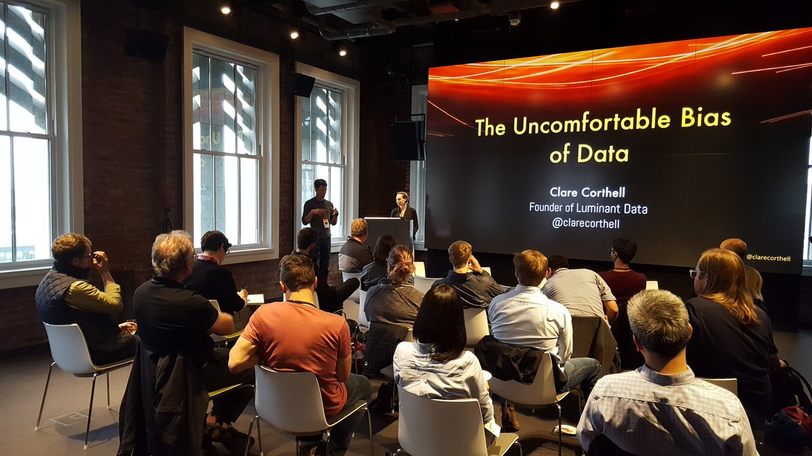

✈ San Francisco
✉ mail / @clarecorthell[✐ Essays ✄ Talks ♞ Interviews Δ Open Source Software]

When we use data to predict, we carry the bias of that data into our predictions. Predictive applications treat people differently, because of the way we encode, collect, normalize, and model data about people. This is particularly problematic in domains like loan assessment, where historical creditworthiness decisions are used to award a given person's credit limit. I work to enable greater responsibility via public and private talks on applying ethics in Product Management and Data Science.
✄ How to Fix Cultural Bias in Machine Intelligence (July 2018)
♞ In Context | Episode 7: Understanding the Marketplace for Data Products with Clare Corthell and Sarah Catanzaro (May 2018)
♞ The Impact Podcast | Episode 74: How to Avoid Bias in Your Machine Learning Models with Clare Corthell (April 2018)
♞ This Week in Machine Learning | Clare Corthell – Open Source Data Science Masters, Hybrid AI, Algorithmic Ethics & More (July 2016)
✄ Engineering Ethics: Practicing Fairness (Machine Learning Summit, Bend Oregon September 2016)
✄ The Uncomfortable Bias of Data: Algorithmic Harm (Cloudera Wrangle October 2015, Bloomberg Beta April 2016)
♞ Blackflix: How Netflix's algorithm exposes racial bias (Marie Claire, Feb 2016)
Dedication to open and free education resources, especially in technical fields. I authored The Open Source Data Science Masters.
Δ The Open Source Data Science Masters (2013+) The most popular curriculum for Data Science, used by universities, academies, and individuals worldwide
♞ Becoming A Data Scientist: Clare Corthell (Podcast, 2016)
♞ Data Science Handbook (Book, 2014)
Δ Python for Data Analysis Tutorials (Mode Analytics, May 2016)
✄ Prototyping: An introduction to Data Analysis with Python (Hackbright, Sept 2014)
✐ Where Successful Data Scientists Sit (Oct 2015)
✄ User-Operated Model-Building Systems (Women in Machine Learning, Feb 2015)
Though much of humanity’s knowledge is written down, it largely remains locked inside natural language text. Extracting this knowledge from text will allow us to integrate the talents of machines and people to create more adaptable, intelligent systems than ever. Modeling knowledge and language is one of our greatest challenges in AI.
Integration of human and computer work for greater productivity and combined intelligence requires deliberate feedback system design. Optimal integration of these two essential contributors will unlock the highest possible performance in AI systems.
Δ Serapis A serverless production pipeline for natural language processing and classification with machine learning
♞ Scouring the Web to Make New Words ‘Lookupable’ (The New York Times, Oct 2015)
Δ ✄Introduction to Natural Language Processing (Humans+Machines Conf, Feb 2016)
✐ ✄ Hybrid Intelligence: How Artificial Assistants Work (Humans+Machines Conf, Feb 2016) Design Patterns for integrating the talents of humans and computers
(c) clare corthell, 2018